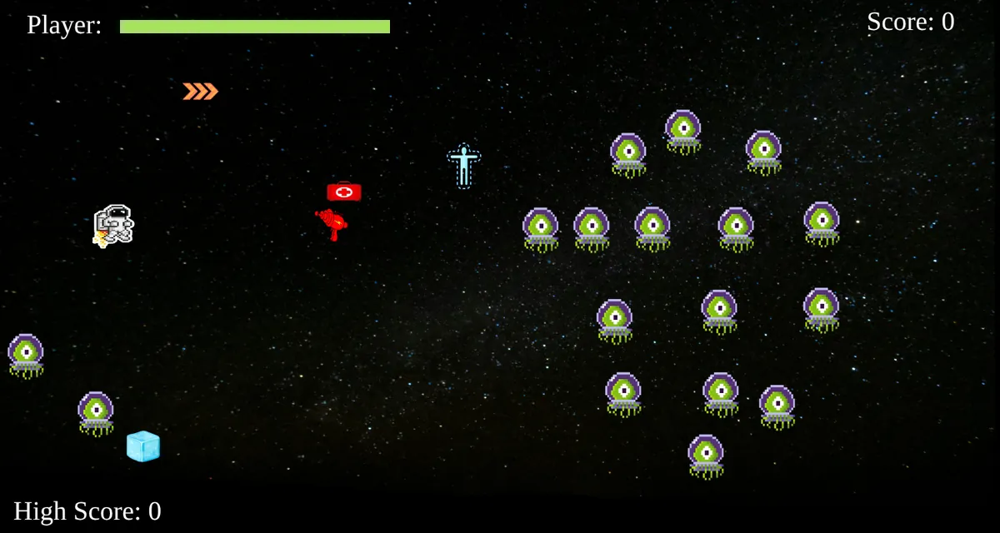
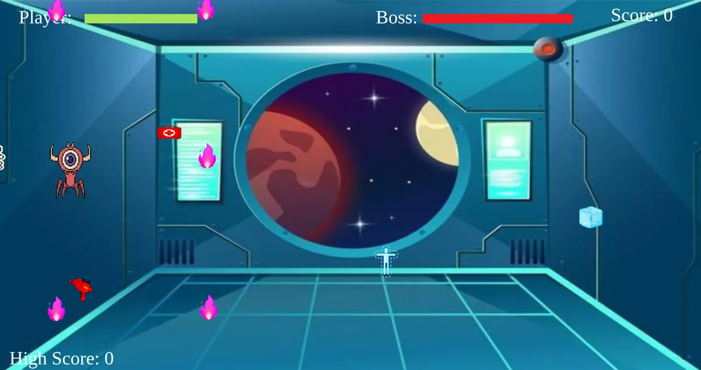

Playable in the browser
Alien Shooter
A top-down space shooter that runs in the browser: four waves, a boss with an 8-way fireball attack, and timed power-ups.

01The question
How far could I get building a complete arcade game from scratch on a plain HTML canvas, with no game engine?
02What I built
- Move with WASD, grab the laser gun that falls in, then click to fire. Aliens home in on you.
- Waves: 20 basic aliens, then 12 tougher yellow aliens that take two hits and fire back when destroyed, then a mix, then a boss. Beat the boss and the cycle repeats with more aliens each time.
- The boss has 150 HP. It tracks a snapshot of your position, pauses, fires fireballs in 8 directions, then starts chasing again.
- Four timed power-ups: a healing kit (+50 HP), ice (freezes aliens for 2 s), invisibility (aliens flee for 2 s), and a speed boost (4 s).

script.js, line 456
function bossAttack(){
tempPlayerLeft = player.left
tempPlayerTop = player.top
bossSpeed = 6
boss.move = false
if(boss.vis){
for(i=0; i<fireballArray.length; i++){
fireballArray[i].left = boss.left
fireballArray[i].top = boss.top
fireballArray[i].vis = true
}
}
setTimeout(function() {boss.move = true;}, 2500);
}script.js, line 772
function collision(first, second) {
if (first.left + first.width > second.left &&
first.left < second.left + second.width &&
first.top + first.height > second.top &&
first.top < second.top + second.height) {
return true
}
}03Key techniques
- Game loop
- A requestAnimationFrame loop that moves, collides and redraws every entity each frame.
- Aiming
- Turns the click position relative to the player into one of 8 firing directions.
- Collision
- Axis-aligned bounding-box checks, plus a pass that pushes aliens apart so they don't stack on top of each other.
- Boss state machine
- Chase, pause, burst-fire, resume, all driven by timers.
04What I learned
The whole game is about 780 lines and 33 functions with no classes, and it shows: most state lives in global variables. If I rebuilt it, I'd give every entity a class with its own update and draw methods.